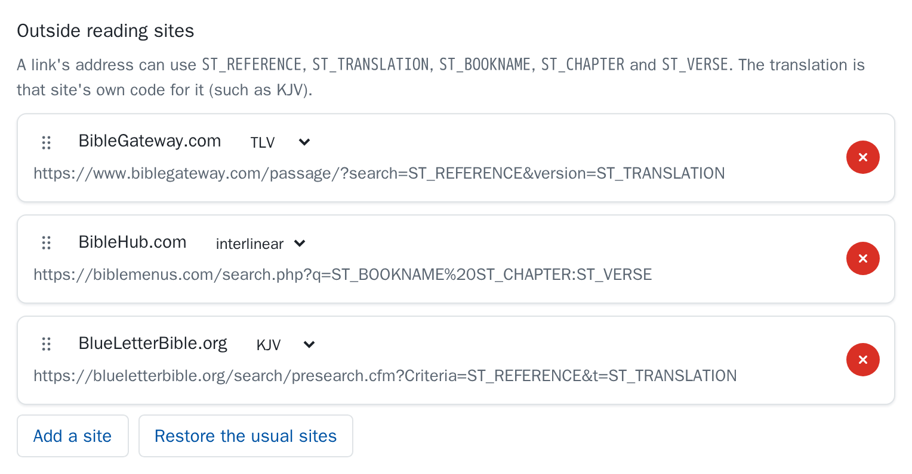

A linked reference, and Read more in its tooltip, open in the ScriptureTips reader unless you choose another site.
On the settings page, under Links, choose from Where links go: the ScriptureTips reader, or one of your outside reading sites. Open pages change at once.
The tooltip still shows the passage from ScriptureTips whichever you choose; only the link's address changes.
The extension comes with BibleGateway.com, BibleHub.com and BlueLetterBible.org. Under Outside reading sites each one is a card. Drag a card by the handle at its left (or focus the handle and press the up and down arrow keys) to put the sites in the order you like; Esc puts a drag back. Click a card's name or address to change it (press Enter or click away to keep the change, Esc to give it up), choose its translation from the short menu beside its name, and remove it with the red round ×, which asks in a dialog first: choose Remove or Cancel (Esc or a click outside also cancels). Add a site adds a card with its name ready to type.

A site's address is a pattern. These words in it are replaced for each link:
| Word | Becomes | For John 3:16 |
|---|---|---|
ST_REFERENCE | The whole reference | John 3:16 |
ST_BOOKNAME | The book | John |
ST_CHAPTER | The chapter | 3 |
ST_VERSE | The verse | 16 |
ST_TRANSLATION | The card's translation menu | KJV |
The translation menu holds that site's own code for the translation to open (such as KJV), which may differ from the name ScriptureTips uses. Auto leaves it to the translation the passage was showing.
For example, the address for BibleGateway.com is:
https://www.biblegateway.com/passage/?search=ST_REFERENCE&version=ST_TRANSLATIONRestore the usual sites puts back any of the three that you removed, and leaves your own.